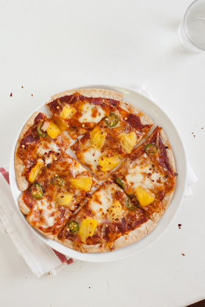

This is a simple Tortilla Pizza recipe that was originally posted to cookieandkate.com.

Ingredients
1 whole wheat tortilla (or whole wheat pita bread)
1/4 cup sauce (marinara, pesto, olive oil and garlic, barbecue sauce)
1/3 cup or less shredded/crumbled cheese (mozzarella, cheddar, goat, feta)
Toppings (go wild!)
Instructions
Preheat the oven to 425 degrees Fahrenheit.
Place the tortilla in a 12-inch cast iron pan (see notes on baking surfaces below). Spread sauce evenly across the tortilla, leaving 1/2 inch around the edges. Sprinkle with cheese and toppings.
Bake for 12-14 minutes, until the cheese is golden and bubbling (no sooner!) and the edges of the tortilla are lightly browned. Slice and serve.
Notes
If you don’t have a cast iron skillet I highly recommend getting one, but you can use an oven-safe baking rack or bake it directly on the rack of your toaster oven instead. Bake at 400 degrees for 8 to 11 minutes. Do not use a regular baking sheet because the bottom of the tortilla will not get crispy, your cheese will slide right off and you’ll wish you ordered out.
Although I have not tried it personally, Kim tried making tortilla pizzas in her cast iron skillet on a gas grill and said they turned out great!
Make sure to check the ingredients list on the whole wheat tortillas. It should list about 5 ingredients, not 25. I buy mine at health food stores and store them in the fridge or freezer and they almost never go bad.
Topping ideas:
As shown: barbecue sauce (trust me), fresh mozzarella and sharp cheddar cheese, chopped red onion, sliced fresh jalapeño, fresh or defrosted frozen pineapple (canned pineapple is not as good).
Basil pesto, feta, fresh or roasted bell peppers (jarred is fine), sliced kalamata olives, chopped red onion, sliced cherry tomatoes.
Arugula pesto, basil pesto or light marinara sauce, mozzarella (optional), fresh arugula and parmesan shavings added after baking (like this).
Red pepper pesto and goat cheese.
Anything you want!